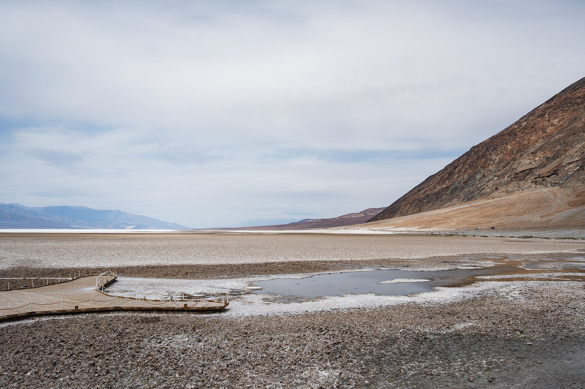

📅 Fri Jan 15 – Mon 18, 2027·3 nights, base: Echo Canyon Road, site E1·Join this trip →
Death Valley — MLK weekend, January 2027
Three nights camped on our own gravel pad off Echo Canyon Road, a few miles from Furnace Creek, in the one season when Death Valley is comfortable: sunny 60s by day, dark skies and cold, silent nights. The lowest, hottest, driest place in North America is at its best in January — and there is room at camp for more people.
When
Fri Jan 15 – Mon 18, 2027
3 nights ·
Home base
Echo Canyon Road, site E1
Backcountry Roadside Camping, Echo Canyon Road, site E1 — a reserved, designated dispersed site. Echo Canyon Road leaves CA-190 about 4.6 miles east of the Furnace Creek Visitor Center; E1 is the first site, 1 mile down the gravel road and the closest one to pavement. It is a 70-ft pull-through gravel pad for up to 12 people and 3 vehicles, with no water, toilets, shade or fire ring. Our nearest — and only — neighbor is half a mile away. Furnace Creek (visitor center, store, fuel, restrooms, showers for a fee) is about 10 minutes back down the road.
Hosted by Aaron. Plans below are a working draft — say what you’d change.
If you’re joining: E1 is reserved through recreation.gov ($10/night, up to 6 months ahead) and holds 12 people and 3 vehicles, so joiners can share our site — just tell Aaron how many people and cars. If we outgrow it, Furnace Creek Campground is in its reservable season and Sunset and Texas Springs campgrounds next to it are first-come, first-served.
Getting in
Fri Jan 15: drive in from Las Vegas via Pahrump — I-15 to NV-160, Bell Vista Road to Death Valley Junction, then CA-190 west: about 120 mi and 2 hours to Furnace Creek. Fill the tank and buy ice and groceries in Pahrump; in-park fuel is limited and expensive. Pay the entrance fee at the visitor center or an automated kiosk (there are no staffed entrance stations). Aim to reach camp with an hour of daylight to set up; sunset is around 4:50 p.m.
Getting out
Mon Jan 18 (MLK Day): pack up in the morning, a last stop or two along CA-190, then the 2-hour drive back to Las Vegas — or continue west on CA-190 toward Lone Pine and US-395 if you are heading to California.
What we might do
No fixed schedule — these are the 10 things worth the trip, ranked by popularity. Tap one for the full card, and use Add to my trip to mark what you’d want to do.
January at Furnace Creek averages a 67°F high and 40°F low. Expect sunny, still days that feel warm in the sun and cold the moment it sets. Rain is rare but a winter storm can close dirt roads.
Nights
We are camping at about sea level with no shelter: plan on upper 30s at night, possibly colder. A 20°F sleeping bag, an insulated pad and a warm hat make it a great night instead of a long one.
Daylight & dark sky
Sunrise around 6:50 a.m., sunset around 4:50 p.m. Death Valley is a Gold Tier International Dark Sky Park and January nights are long — bring binoculars or a camera for the Milky Way.
Roads to camp
The first mile of Echo Canyon Road to E1 is graded gravel that a careful SUV or crossover handles; recreation.gov asks for high clearance and encourages 4WD for the sites beyond. No trailers or large RVs. Do not drive off the roadbed anywhere in the park.
Water & facilities
There is no water at camp. Bring at least a gallon per person per day plus cooking water, refill at the Furnace Creek Visitor Center. Nearest restrooms are at Furnace Creek; pack out all trash. Generators are not allowed in the backcountry.
Crowds & closures
MLK weekend is a busy winter weekend at Furnace Creek, but our site is private by design. Check the park’s current conditions page the week of the trip for road status — several backcountry roads are still recovering from recent storms.
Bring
Sleeping setup rated to 20°F: bag, insulated pad, and a warm hat for sleeping
All your water: 1 gal per person per day, plus cooking and washing water
Camp stove and fuel — there is no fire ring at the site; check current fire rules at the visitor center
Headlamp with spare batteries, and a red-light mode for stargazing
Layers for 40–70°F: sun hat and sunscreen by day, puffy jacket and gloves after dark
Camp chairs and a table — the site is a bare gravel pad
A full tank of gas from Pahrump or Las Vegas; offline maps downloaded (no cell service outside Furnace Creek)
Trash bags to pack everything out, and a shovel or wag bags — no toilets at camp
Park entrance: $30 per vehicle for 7 days, or an America the Beautiful pass
Still deciding
Whether to add a second site nearby if the group passes three vehicles
One big-effort day (Dante’s View at sunrise, or Mosaic Canyon and the dunes) versus keeping every day short and easy
Group dinner at The Ranch at Death Valley one night, or cook at camp every night
Want to come?
This is an easy trip to say yes to: one drive from Las Vegas, one campsite that fits a dozen people, and days spent on short walks between some of the strangest landscapes in the country. Come for all three nights or just the weekend.
Tell Aaron you are in — how many people, which nights, and what you are driving (so we stay within 3 vehicles at E1 or add a nearby site).
Get yourself to Las Vegas, or plan the drive in on CA-190; we will coordinate a Pahrump meet-up for the last leg.
Sort a cold-weather sleeping setup and your own water and food (see Bring).
Skim the Top 10, tap Add to my trip on what you’d want to see, and tell us — that shapes which days we go where.

Death Valley National Park
The lowest, driest, hottest place in North America — and one of the most beautiful.
No staffed entrance stations — pay at a kiosk, the visitor center, or online
Best months
November–March
Spring is busiest; late October and February are the sweet spots
Nearest airport
Las Vegas (LAS)
About 120 miles / 2–2.5 hours to Furnace Creek
Elevation range
-282 ft to 11,049 ft
Badwater Basin to Telescope Peak, in sight of each other
Park size
3.4 million acres
Largest national park outside Alaska; over 93% roadless wilderness
Time zone
Pacific (PT)
Cell service
Essentially none
Spotty at Furnace Creek and Stovepipe Wells only; free Wi-Fi at the visitor center
Dark sky
Gold Tier Dark Sky Park
The highest International Dark-Sky Association rating
Reservation needed?
No
No timed entry. Only campsites are reserved.
Current conditions · checked 2026-09-17 · 6 items
Titus Canyon Road closes for repairs October 1, 2026 through September 30, 2027. The park's most popular backcountry drive is only temporarily open until then, and may close on individual days. source
Scotty's Castle and Bonnie Clare Road remain closed after the 2015 flood and a later fire. No access is permitted, including on foot; the NPS says the reopening date is unknown. source
Darwin Falls Road is closed, likely until summer 2027 — the road is "completely gone in many places." Hikers may park on the CA-190 shoulder and walk in. source
Seasonal campgrounds are still closed as of mid-September 2026. Texas Springs, Sunset and Stovepipe Wells reopen in late fall; Furnace Creek is first-come for the summer. Emigrant is closed indefinitely (water system), and Saline Valley closed after a wildfire on September 15, 2026. source
Flood damage still affects two paved roads. North Highway has loose gravel and missing shoulders; southern Badwater Road below Badwater has soft shoulders, large drops at the edges and unpaved stretches. source
The 2026 superbloom is over. Low-elevation flowers have set seed; higher elevations have scattered blooms. Superblooms average once a decade — 2026, 2016, 2005 and 1998. source
Why go
Death Valley's superlatives are all literally true. It holds the world record air temperature — 134°F, set at Furnace Creek on July 10, 1913 — and the lowest ground in North America at 282 feet below sea level, in sight of Telescope Peak 11,049 ft above.
What surprises first-timers is the variety. Within an hour of Furnace Creek you can walk a salt pan, drive hills stained red and green by volcanic minerals, scramble a polished marble slot canyon, and circle a 2,000-year-old crater. Over 93% of its 3.4 million acres is roadless wilderness, and it is a Gold Tier Dark Sky Park.
It is also remote: no cell service across most of the park, three gas stations, and help hours away.
The NPS calls spring "the most popular time to visit." Low-elevation wildflowers run mid-February to mid-April, moving to 3,000–5,000 ft by late April. Everything is open and everything is busy — Furnace Creek Campground books to capacity most nights. By May the valley is already scorching.
Hard
Summer
Jun–Aug
Highs 110–116°F · Lows 81–88°F
Survivable by car, not on foot. NPS posts "hiking not advised after 10 am" on every low-elevation trail. Overnight lows stay in the 80s. The mountains are the exception — Wildrose and Telescope Peak are the summer hikes. Several campgrounds close; Furnace Creek shrinks to 41 first-come sites.
Good
Fall
Sep–Nov
Highs 77–106°F · Lows 48–76°F
September still reaches 106°F, but the NPS notes "autumn arrives in late October, with warm but pleasant temperatures." Late October and November are arguably the best weeks of the year — seasonal campgrounds reopen, crowds are lighter than spring, and the light is long.
Best
Winter
Dec–Feb
Highs 65–73°F · Lows 38–46°F
Cool days, chilly nights, rare rain, and snow capping the Panamints above the salt flats — the NPS calls it "especially beautiful." Perfect valley-level hiking weather. Trade-offs: freezing nights at camp, short daylight, and the high country often snowed in. Ranger programs run mid-November to mid-April.
Top 10 natural attractions
Ranked by popularity. Distances and times are official park figures where available; “time” assumes an average hiker with stops. Tap Add to my trip to build a personal shortlist.
1 mi round trip to the salt flat edge; 1.5–2 mi for the best polygons
Elevation gain
Flat
Time
40 min–1.5 hr
Start / parking
Paved lot on Badwater Road, 17 mi (30 min) south of Furnace Creek
Best time
Sunrise or sunset; avoid midday in summer
The lowest point in North America, 282 feet below sea level. Nearly 200 square miles of salt flat — mostly table salt, with calcite, gypsum and borax — crack into geometric polygons as groundwater seeps up and evaporates. Look east for the tiny "SEA LEVEL" sign on the cliff far above you, then west to Telescope Peak at 11,049 ft.
Tips from the research
Polygons near the boardwalk are trampled flat — walk 15–20 min out for sharp ones.
Sunrise lights the Panamints; sunset lights the Black Mountains behind you.
Glare off the white salt is brutal even in winter — bring sunglasses.
Season note: Summer: no more than ~15 min outside the vehicle. Rare winter floods form shallow Lake Manly.
Accessibility: ADA ramp to a boardwalk over the spring pool (older boards, not level); the salt beyond is firm. Vault toilet, RV parking.
Signed lot on CA-190, 15 min east of Furnace Creek
Best time
Sunrise — the classic. Sunset works too.
The most photographed view in the park. A short paved ramp climbs to an overlook above a sea of yellow and brown badlands carved by water that almost never falls. The jutting spine in the middle is Manly Beacon, 823 ft, named for the 49er who walked out of the valley for help. Beyond it lie the salt flats and the Panamints.
Tips from the research
Arrive 30–40 min before sunrise: first light hits Manly Beacon before the sun clears the range.
The Badlands Loop Trail starts here and links to Gower Gulch and Golden Canyon.
Twenty Mule Team Canyon's one-way dirt road starts just east — a 2.5-mile bonus loop.
Season note: Comfortable year-round; the lot fills 30 minutes before sunrise in spring.
Accessibility: Wheelchair accessible — the quarter-mile approach is paved, though it climbs. Bus/RV parking, vault toilet.
Entrance 8.5 mi south of the Badwater Rd / CA-190 junction
Best time
Late afternoon, when the mineral colors are most saturated
The most popular scenic drive in the park — a one-way, nine-mile paved road rollercoastering through hills splashed with red, orange, yellow, green, pink and lavender, all from volcanic deposits rich in iron oxides and chlorite. The Artists Palette pullout is the showpiece, visible from the parking area. Parts of Star Wars: A New Hope were filmed here.
Tips from the research
Drive it in late afternoon — the NPS says colors are "most dramatic during afternoon light."
The 25-ft length limit is real: leave the RV at camp.
Watch for cyclists — the dips hide them. One-way, so you cannot double back.
Season note: Open year-round. Colors go flat in harsh midday sun.
Accessibility: Doable from the car; Artists Palette is visible from the paved lot. Vault toilet.
2 mi round trip to the tallest dune (no set route)
Elevation gain
185 ft
Time
1.5 hr
Start / parking
Paved lot on CA-190 just east of Stovepipe Wells Village
Best time
Sunrise or sunset for the ripple shadows; then stay for the stars
The park's most accessible dune field, and the one that looks like everyone's mental image of a desert. Sand eroded from mountains to the north is carried by wind and trapped by mountains to the south, so the dunes stay put even as individual grains move. There is no official trail — the whole field is open for cross-country wandering.
Tips from the research
Go at sunrise: overnight wind erases footprints and low light shadows every ripple.
The tallest dune is about a mile in — farther than it looks. Sight a landmark first.
Stay for the stars — one of the best dark-sky spots, right off the highway.
Season note: Sand gets dangerously hot in summer — NPS posts "hiking not advised after 10 am."
Accessibility: Paved lot with bus/RV spaces and a dune view, but no accessible surface on the sand. Vault toilets, no pets.
Furnace Creek Visitor Center, CA-190 — no street address; N 36°27.70, W 116°52.00
Best time
Any time — the visitor center opens at 8 am daily
Not a sight so much as the park's operating system: the visitor center (8 am–5 pm, every day of the year), the only full-service fuel and groceries on the east side, The Inn and The Ranch, the campground, and the Timbisha Shoshone village. A mile west, Harmony Borax Works preserves adobe ruins and a twenty-mule-team wagon from the operation that hauled borax 165 miles to Mojave in the 1880s.
Tips from the research
Stop at the visitor center first — rangers have today's road conditions.
Pay your fee here or at the 24/7 machine; there are no entrance stations on the roads.
Free 24-hour Wi-Fi at the visitor center — your last reliable connection for a while.
Season note: Open year-round. The world record 134°F was recorded here on July 10, 1913.
Accessibility: The visitor center is fully accessible, with assisted-listening and audio-description devices. The Harmony Borax loop is wheelchair accessible.
Viewpoint at the lot; ridge walk north; Mt. Perry 8 mi round trip
Elevation gain
None at the viewpoint; 1,200 ft to Mt. Perry
Time
45 min drive each way, 30 min at the top
Start / parking
End of Dante's View Road, 45 min from Furnace Creek
Best time
Sunrise, sunset, or after dark for the Milky Way
The best single overview of Death Valley, 5,575 feet directly above Badwater Basin on the crest of the Black Mountains. The whole salt pan unrolls below with the Panamints and Telescope Peak opposite. Asked in 1926 for the finest view of Death Valley, local Charles Brown said: "I don't pay much attention to scenery, but I know one view that made me stop and look."
Tips from the research
Walk five minutes north along the ridge and you'll have the view to yourself.
New moon for the Milky Way; full moon when the salt flats glow white below.
Genuinely cold and windy — pack layers even when it's 100°F at Furnace Creek.
Season note: Around 5,500 ft, so 20–25°F cooler than the valley floor. Bring a jacket any month.
Accessibility: Wheelchair accessible viewing area at the lot, with exhibits and a vault toilet.
2 mi round trip; 3 mi with Red Cathedral; 7.8 mi Zabriskie–Gower Gulch loop
Elevation gain
535–834 ft
Time
1.5–4.5 hr depending on route
Start / parking
Paved lot 2 mi south of CA-190 on Badwater Road
Best time
Early morning or the last two hours of light
The best short hike in the park, and the easiest way to get inside the badlands you photographed from Zabriskie Point. The trail climbs a wide golden-walled wash past ripple marks fossilized in stone. Half a mile of scrambling past the junction reaches Red Cathedral, an amphitheater of fluted rust-red walls. The full 7.8-mile loop climbs to Zabriskie Point and returns via Gower Gulch.
Tips from the research
Do the 7.8-mile loop downhill: get dropped at Zabriskie Point and walk back.
The base hike has exactly one 3-foot rock scramble; kids handle it fine.
Red Cathedral means crawling through tight rock — skip it with small children.
Season note: NPS: "hiking not advised after 10 am in the summer." Do not enter if rain threatens.
Accessibility: Not accessible. Paved lot with RV spaces and a vault toilet; no pets on the trail.
Short compacted-gravel spur off Badwater Road, between Artists Drive and Badwater
Best time
Any time; low sun makes the spires more dramatic
An immense field of rock salt eroded by wind and rain into jagged, ankle-breaking spires — so serrated, said an old guidebook, that "only the devil could play golf on such rough links." The real reason to stop is to switch off the engine and listen: on a hot day you can hear faint pops and pings as billions of tiny salt crystals expand and burst apart.
Tips from the research
Stand still and stay quiet for a minute — the crackling is the whole experience.
NPS says view it from the lot: the spires are razor-sharp and easily damaged.
Big open horizon makes this a good sunrise, sunset and night-sky stop.
Season note: Mid-May to mid-September this spot can hit 120°F or higher. Best late fall to early spring.
Accessibility: Viewable from the car; spur and lot are compacted gravel suitable for most vehicles. No trail or restroom.
End of the 2.3 mi unpaved Mosaic Canyon Road, opposite Stovepipe Wells Campground
Best time
Morning, while the canyon is still in shade
The park's best canyon walk, and it pays off within five minutes. Slick marble narrows polished to a shine by centuries of debris-laden floodwater open immediately above the trailhead. Further up, look for the mosaic breccia the canyon is named for — older rock fragments naturally cemented into a stone collage. Most hikers stop at the boulder jam 1.3 miles in.
Tips from the research
The first half mile of narrows is the highlight — a short visit justifies the drive.
Wear shoes with grip: the polished marble is genuinely slippery.
The 2.3-mile access road is unpaved but usually fine for sedans.
Season note: NPS: "hiking not advised after 10 am in the summer." This canyon floods — skip it if rain is possible.
Accessibility: Not accessible — an unimproved canyon bottom with scrambling. Gravel lot; nearest restroom at Stovepipe Wells.
Paved lot at the crater rim, at the end of North Highway
Best time
Afternoon and sunset, when the ejecta layers show their colors
A maar volcano — molten rock met groundwater, flashed it to steam, and blew a hole in the desert roughly 2,100 years ago. The result is half a mile across and 500–777 feet deep, the layers it punched through exposed under a black mantle of ejecta. A 1.5-mile loop circles the rim; Little Hebe Crater appears half a mile along. An important cultural site for the Timbisha Shoshone.
Tips from the research
Walk the rim counter-clockwise — the uphill comes first, views open gradually.
Exposed drop-offs throughout: not for anyone uneasy with heights.
No restrooms — the nearest are at Grapevine Ranger Station, 5 miles east.
Season note: Windy in every season. Do not descend into the crater in summer — the climb out is a slog in loose debris.
Accessibility: The crater is visible from the paved lot (buses/RVs fine). The rim loop is unimproved and exposed. No restrooms.
Natural Bridge — A 1-mile, 45-minute walk up a wash to a 35-foot rock span, off a 13.5-mile gravel road on Badwater Road. Easy and family-friendly; the salt-flat view on the way back is the best part.details
Twenty Mule Team Canyon — A 2.5-mile one-way dirt road rollercoastering through yellow badlands just east of Zabriskie Point. Usually passable in a normal car, and one of the few roads where you may walk a dog.details
Titus Canyon Road — The park's most popular backcountry drive — 27 one-way miles from Nevada past Red Pass, Leadfield ghost town and petroglyphs into narrows 20 feet wide. Closed for repairs October 1, 2026 – September 30, 2027.details
Racetrack Playa — The sailing stones and their trails across a dry lakebed. 4x4, high clearance and heavy-duty tires, no cell service, and the NPS says at least 3.5 hours each way from Furnace Creek. Rental cars get flats here constantly.details
Telescope Peak — The park's high point at 11,049 ft — 12.2 miles round trip and 3,375 ft of gain from Mahogany Flat, up a high-clearance dirt road. The right hike in summer, a snow climb in winter.details
Photos & map
10 photos from January 2025 — a taste of what the trip actually looks like. Switch to the map to see where each one was taken alongside the Top 10.
The fastest route. I-15 to NV-160 to Pahrump; north of town turn left on Bell Vista Road, which becomes Stateline Road and ends at Death Valley Junction; right on CA-127, quick left on CA-190. NPS: "about 120 miles and takes 2 hours" (its lodging page says 2.5).
120 mi
Las Vegas (LAS) via Beatty, NV
The scenic alternative: US-95 north to Beatty, then SR-374 over Daylight Pass. Beatty is 43 miles / about 45 minutes from Furnace Creek, with fuel, motels, Rhyolite ghost town and the closest DC fast chargers.
Lone Pine / Olancha, CA
The west-side approach. SR-136 from Lone Pine joins CA-190 at Olancha and runs in past Panamint Springs and Stovepipe Wells. NPS gives Lone Pine as about 1 hour 45 minutes from Furnace Creek.
Ridgecrest / Trona, CA
From the Los Angeles side: I-5 or CA-14 north to Ridgecrest, then SR-178 (Panamint Valley Road) through Trona to CA-190. NPS gives Ridgecrest as about 2.5 hours — the last full-service town, so fuel here.
Shoshone / Tecopa, CA
CA-178 north from Shoshone joins Badwater Road past Ashford Mill — a quiet back door, hot springs at Tecopa nearby. Shoshone is about 1 hour out. Southern Badwater Road still has flood damage.
Getting around
There is no shuttle and no public transportation to or within the park. Most headline sights sit on CA-190 and Badwater Road and need nothing more than a regular car; the short gravel spurs to Devils Golf Course, Natural Bridge, Mosaic Canyon and Twenty Mule Team Canyon are normally fine for sedans, but washouts happen — ask at the visitor center.
Do not rely on GPS. The NPS warns navigation here is "notoriously unreliable." There is no street address for the park; coordinates are N 36°27.70, W 116°52.00. Download the NPS App and save Death Valley offline.
Entrance fees & passes
$30 per private vehicle, 7 days; $25 per motorcycle; $15 per person on foot or bicycle. A Death Valley annual pass is $55; the America the Beautiful pass is $80 for US residents ($250 non-residents), free or discounted for seniors, military, people with disabilities and 4th graders.
There are no staffed entrance stations — nobody stops you on the way in, so paying is on you. Buy ahead on Recreation.gov and print the pass for your dashboard; pay a ranger at Furnace Creek or Stovepipe Wells; or use a 24/7 automated machine at Furnace Creek, Stovepipe Wells, Grapevine Ranger Station, Ryan Kiosk, Zabriskie Point, Badwater, Hell's Gate or several campgrounds. Credit cards only — no cash anywhere in the park.
Reservations & timed entry
None. No timed entry and no day-use reservation system — you can drive in at any hour of any day. The only things you reserve are Furnace Creek Campground (October 15 – April 15), the designated backcountry roadside campsites, park lodges, and occasional ticketed ranger programs.
Fuel, food, water, cell
Fuel — only three stations in an area the size of Connecticut: The Oasis at Death Valley (Furnace Creek, two grades plus diesel), Panamint Springs (gasoline and diesel) and Stovepipe Wells (87-octane only, 24 hours). All are a captive market — fill up in Pahrump, Beatty, Lone Pine or Ridgecrest first.
EV charging: no DC fast chargers in the park; the nearest are in Beatty, 43 miles out. Inside, Level 2 J1772 chargers at The Inn and The Ranch (four at each, some reported out of service) and four faster Blink units at Stovepipe Wells. Never plug an EV into a Furnace Creek Campground pedestal — the NPS warns it can destroy your car and the campground system at your expense.
Water only at Furnace Creek, Stovepipe Wells and Panamint Springs. Cell service: assume none.
Furnace Creek Visitor Center: 8 am–5 pm, every day of the year — fees, ranger advice, a 20-minute film, exhibits, the Death Valley Natural History Association bookstore and free 24-hour Wi-Fi. Stovepipe Wells Ranger Station has irregular hours; call 760-786-3200. General stores at both; showers and laundry for a fee at The Ranch.
Required and reservable only online for the 47 designated roadside sites on Echo Canyon, Hole in the Wall, Greenwater Valley and Cottonwood/Marble Canyon roads. $10 per night, up to 6 months ahead. No walk-up option.
Backcountry / wilderness use permit (everywhere else)
Free and recommended, not required, for all other roadside camping, backpacking and canyoneering. Get one at Furnace Creek Visitor Center, Stovepipe Wells Ranger Station or a drop box — it is how rangers know to look for you.
How to book:The only reservable NPS campground in the park, and it works two ways by season.
Oct 15 – Apr 15 (reservable): all 136 sites go through Recreation.gov or 877-444-6777, 5 days to 6 months in advance. The NPS notes it has "booked to capacity most days" — set a reminder for the day your date opens six months out. The 18 full-hookup sites go instantly.
Late Apr – early Oct (first-come): the campground shrinks to 41 sites, some loops close, no reservations.
Fees: $30 standard; $44 full hookup ($30 site + $14 utility fee, which is not discounted, though Senior/Access holders get the site half-price); $40 and $60 group sites. 14-day annual limit.
A gravel flat across Badwater Road from the Timbisha Shoshone village, minutes from the visitor center.
Sites
230 sites
Cost
$18/night ($9 Senior/Access)
Season
Typically late fall to mid-to-late April
Good for
RVs to 60 ft and trailers to 50 ft; late arrivals with no plan. Note: no fire grates and no picnic tables at sites — campfires only at a few community grates.
potable water (seasonal)flush toilets (seasonal)dump station (seasonal)camp storeno hookups
How to book:Pure first-come, first-served — no reservations, ever. Take any open site, then pay by card at the automated machine or at the visitor center across the road. With 230 sites and almost no vegetation, the NPS says it "rarely fills" and "almost always has sites available, even in peak season" — the reliable fallback when Furnace Creek is booked out.
In the hills just above Furnace Creek off CA-190 — higher, quieter and greener than the valley-floor campgrounds, with real views.
Sites
106 sites (26 tent-only)
Cost
$20/night ($10 Senior/Access)
Season
Typically late fall through mid-April
Good for
Tent campers and small rigs — RVs to 35 ft, trailers to 25 ft.
potable water (seasonal)flush toilets (seasonal)dump station (seasonal)fire grate and table at every siteno generators
How to book:First-come, first-served only. Take a site, then pay at the automated machine at the entrance or upper loop, or at the visitor center. Generators are banned throughout this campground, which is exactly why tent campers prefer it.
At sea level on CA-190, 24 miles west of Furnace Creek — beside the Mesquite Flat dunes and Mosaic Canyon, next to the general store and ranger station.
Sites
190 sites (28 tent-only)
Cost
$18/night ($9 Senior/Access)
Season
Late fall to mid-to-late April; closed in extreme heat
Good for
Anyone basing on the west side for the dunes, Mosaic Canyon and the Panamints.
potable water (seasonal)flush toilets (seasonal)dump stationcamp storefirewood and ice for saleno hookups
How to book:First-come, first-served; pay at the machine at the entrance. The NPS closes it seasonally in extreme heat. Campers can buy pool and shower passes at Stovepipe Wells Village and use its free Wi-Fi — a real perk, since no NPS campground has showers. A separate concession-run RV park with full hookups sits alongside, booked through the Village.
Far north of the park at 1,800 ft, 2 miles off Scotty's Castle Road below Grapevine Canyon — the best base for Ubehebe Crater and the Racetrack.
Sites
40 sites
Cost
$20/night ($10 Senior/Access)
Season
Year-round
Good for
Northern-park trips, dark skies, and anyone who wants quiet.
potable waterflush toilets (year-round)dump stationfire grate and table at every siteno hookups
How to book:First-come, first-served, open year-round — one of only three NPS campgrounds here that never closes. Take a site, then pay at the machine. Being an hour from Furnace Creek, it holds sites long after the central campgrounds fill. Approach from CA-190: access via Nevada SR-267 through Grapevine Canyon is closed until further notice with Scotty's Castle. NPS summer warning: "nightly lows in the 90s Fahrenheit."
Along the unimproved gravel Echo Canyon Road, which leaves CA-190 about 4.6 miles east of the Furnace Creek Visitor Center. Site E1 is a mile in; the rest are spaced at least half a mile apart.
Sites
9 sites on Echo Canyon Road (47 across the facility)
Cost
$10/night
Season
Year-round
Good for
High-clearance 4x4 owners wanting a private site and a black sky 15 minutes from Furnace Creek.
no waterno toiletsno shadeno generatorsexcellent stargazing
How to book:Reservable, and reservation is mandatory — there is no walk-up option. The nine Echo Canyon sites (E1–E9) belong to a 47-site recreation.gov facility, Death Valley Backcountry Roadside Camping, which also covers Hole in the Wall Road (6 sites), Greenwater Valley Road (19) and Cottonwood/Marble Canyon roads (13).
$10 per night, bookable up to 6 months ahead, year-round — though recreation.gov warns temperatures "frequently range above 100F May through September."
Vehicle requirement, as the NPS defines it: a high-clearance SUV or truck with at least 15-inch wheel rims and 8 inches of ground clearance. 4WD is "highly encouraged." Trailers, RVs and passenger cars cannot reach most sites. Each site is a bare gravel pad — no water, toilet, shade or table, and generators are banned in the backcountry.
Along authorized dirt roads throughout the park, in previously disturbed pullouts.
Sites
Unlimited dispersed, plus free primitive campgrounds
Cost
Free
Season
Year-round, subject to snow at elevation
Good for
Self-sufficient travelers with the right vehicle, two spare tires and a satellite messenger.
no services of any kindcarry all waterpack out everything
How to book:Free, no reservation; a free permit is recommended but not required — get one at Furnace Creek Visitor Center, Stovepipe Wells Ranger Station or a drop box so rangers know where to look for you.
The rules that matter: camp at least 1 mile down a dirt road from its junction with any paved road, in an already-disturbed spot, and more than 100 yards from any water source. Bury waste 200 yards from water or camp.
Prohibited: any paved road, pullout or parking lot; the valley floor from Ashford Mill north to 2 miles north of Stovepipe Wells; Eureka Dunes, Greenwater Canyon and historic mining sites; and a dozen-plus day-use-only roads including Titus Canyon, Mosaic Canyon, West Side Road, Wildrose Road, Skidoo Road, Racetrack Road and Big Pine Road.
Free primitive campgrounds are the other option: Wildrose (23 sites, 4,100 ft, no water), Thorndike (6 sites, 7,400 ft), Mahogany Flat (9 sites, 8,200 ft, at the Telescope Peak trailhead) and Eureka Dunes (7 sites). Emigrant is closed indefinitely after flood damage.
The historic, upscale option: a 1927 mission-style hideaway terraced into the hillside, AAA Four Diamond for 35+ years, with a spring-fed pool, palm gardens, a formal dining room and views west to the Panamints. Inn rooms plus newer casitas. Open all year; Level 2 EV chargers. Xanterra, 800-236-7916.
The family half of The Oasis, and the practical choice: renovated rooms and cottages around a town square of date palms, a spring-fed pool, casual restaurants, a saloon, general store, gas and diesel, and the pay showers and laundry campers rely on. Also the world's lowest golf course, 214 ft below sea level.
Examples: Rooms and cottages, Furnace Creek Golf Course
Simpler, cheaper and better placed for the west side — the dunes and Mosaic Canyon are minutes away. Renovated air-conditioned rooms, a pool with a lift, restaurant and saloon, general store, a 24-hour gas station (87 octane only), four Blink EV chargers, and a concession-run RV park with full hookups. 760-786-7090.
The most low-key in-park option, on the western edge toward Lone Pine. Privately run, open all year, with resort rooms, camping and RV sites, a restaurant, and gasoline and diesel. Useful if you enter or leave via Olancha or the Panamint Valley. 775-482-7680.
Examples: Motel rooms, Cabins, Campground and RV sites
The closest gateway town and the best value near the park: motels, casinos, restaurants, cheap fuel, and the nearest DC fast chargers. Rhyolite ghost town and the west end of Titus Canyon Road are right here. Enter via SR-374 over Daylight Pass.
Examples: Motels on US-95, Rhyolite ghost town, Fast charging
The biggest town on the Las Vegas side and the last full-service stop on the fastest route in: supermarkets, chain hotels, casinos, and the cheapest fuel you will see. Buy your water and food here.
The west-side base, on US-395 under Mount Whitney and the Alabama Hills. Motels, outfitters, and the Lone Pine Interagency Visitor Center — one of the authorized places to buy a Death Valley pass before you arrive. Ridgecrest (~2.5 hr) and Shoshone (~1 hr) are the other gateways.
Examples: Motels on US-395, Alabama Hills, Interagency Visitor Center
The handful of things that actually hurt people here, with the specific rule that prevents each one.
critical
Extreme heat — the 10 am rule
Death Valley holds the world record air temperature: 134°F, July 10, 1913, and July still averages 116°F. The NPS posts one rule on nearly every low-elevation trail page: "Hiking not advised after 10 am in the summer." May–September, stay on paved roads near an air-conditioned vehicle — no more than ~15 min outside at Badwater. Confusion or disorientation is heat stroke.
critical
Water
Drink at least one gallon (4 liters) per person per day, more if active, plus salty food or electrolytes. Drinking water exists at only three places: Furnace Creek, Stovepipe Wells and Panamint Springs. Carry water for the car too — 5 gallons is the standard backcountry backup. Springs on maps may be dry or contaminated.
critical
No cell service — plan to self-rescue
The NPS says reception is "non-existent in most areas of the park" and "help may be many hours away; travel prepared to self-rescue." Download offline maps, share your itinerary, and carry a satellite messenger or PLB for anything off pavement. Dial 911 if you do find a signal.
critical
Vehicle breakdown and the single-car rollover
The NPS is blunt: "The most dangerous thing in Death Valley is not the heat — it is the single car rollover." Most deaths here are single-vehicle crashes on narrow, winding 1930s roads. If you break down, stay with the vehicle — it is shade, shelter and a bigger target. Raise the hood and mark the road with a large X. AAA often won't tow on dirt.
important
Flash floods
Under 2 inches of rain a year is the problem — the ground can't absorb it. Never enter a canyon during a storm or when rain is forecast, even if the sky above you is clear. Floods arrive fast carrying large debris. The NPS singles out Mosaic Canyon as a frequent flash-flood site; Hurricane Hilary in 2023 destroyed roads still unrepaired in 2026.
important
Abandoned mines
The park is riddled with old workings — gold, silver, lead, borax, talc, mercury. Never enter a mine tunnel or shaft. The NPS lists the hazards: unstable ground, hidden vertical shafts, rotten timbers, pockets of bad air and poisonous gas, and animals sheltering inside. The open adits at Leadfield in Titus Canyon are especially dangerous.
note
Driving at night and wildlife
Park roads are unlit, often unshouldered and rarely straight. Coyotes, jackrabbits and bighorn sheep move at dawn, dusk and after dark — hitting one with no cell service is a bad night. Scout night routes in daylight. Respect rattlesnakes (sidewinders live in the dunes), scorpions and black widows: look before placing a hand or foot.
note
Winter at elevation
Temperatures drop 3–5°F per 1,000 feet climbed, so Dante's View and the Panamint crest are a different world — pack a jacket even at 100°F below. Mahogany Flat (8,200 ft) is "often closed due to snowy/icy conditions"; Thorndike opens mid-April to December. Telescope Peak in winter is a snow climb, 12.2 mi and 3,375 ft.
Itineraries & my trip
My trip
1 day
One perfect day
45 min before sunriseDrive 15 minutes east on CA-190 to Zabriskie Point and walk the quarter-mile paved ramp up. First light hits Manly Beacon before the sun clears the Amargosa Range.
7:30 amBack through Furnace Creek, then 17 miles / 30 minutes south on Badwater Road to Badwater Basin. Walk past the boardwalk onto the salt — 20 minutes out gets you clean polygons.
9:30 amHead north and pull off at Devils Golf Course, a short gravel spur. Fifteen minutes: get out, stand still, listen to the salt crystals popping.
10:15 amContinue north to Artists Drive for the 9-mile one-way loop (25–45 min). No vehicles over 25 ft. To see it at its best, skip it now and return at 4 pm — afternoon is when the colors peak.
11:30 amBack to Furnace Creek: the park film and today's road conditions at the visitor center, lunch at The Ranch, fuel and water, then the 0.4-mile Harmony Borax Works loop a mile west.
2:00 pmOptional: the Golden Canyon trailhead is 2 miles south of CA-190 on Badwater Road — 2 miles round trip, or 3 with Red Cathedral. Skip it in summer heat.
4:00 pmDrive 24 miles west on CA-190 to Stovepipe Wells, about half an hour. Fuel and cold drinks at the general store.
1 hr before sunsetPark at the Mesquite Flat Sand Dunes and walk in 20–30 minutes. Low sun turns every ripple into a shadow. Stay after dark — the Milky Way rises right over the dunes.
2 days
Two days
Day 1, sunriseZabriskie Point, 15 minutes east of Furnace Creek, then down to the Golden Canyon trailhead 2 miles south of CA-190 on Badwater Road.
Day 1, 8:00 amHike Golden Canyon to Red Cathedral — about 3 miles round trip, 1.5–2 hours, with scrambling at the end. The ambitious version is the 7.8-mile loop up to Zabriskie and back via Gower Gulch.
Day 1, 10:30 amContinue south to Badwater Basin (17 miles, 30 min from Furnace Creek). Walk out onto the salt flat; allow 40 minutes to an hour.
Day 1, 12:30 pmWork back north via Natural Bridge (a 1-mile walk off a 13.5-mile gravel road) and Devils Golf Course. Lunch at Furnace Creek.
Day 1, 3:30 pmArtists Drive in afternoon light, when the reds, greens and lavenders are strongest. 9 miles one-way, 25–45 minutes, 25-ft length limit.
Day 1, 1.5 hr before sunsetDrive to Dante's View — 45 minutes from Furnace Creek, 5,575 ft above Badwater. Watch the Black Mountains' shadow cross the salt pan, then stay for the stars. Bring a jacket.
Day 2, sunriseDrive 24 miles west to Stovepipe Wells (about half an hour) and be on the Mesquite Flat Sand Dunes at first light, before the day's footprints appear.
Day 2, 8:30 amMosaic Canyon, minutes away at the end of a 2.3-mile unpaved road. The first half mile of polished marble narrows justifies the stop; the full route is 4 miles.
Day 2, 11:30 amDrive north to Ubehebe Crater — about an hour from Furnace Creek on North Highway (expect loose gravel and missing shoulders). Walk the 1.5-mile rim loop counter-clockwise, or take in the 600-foot hole from the lot.
Day 2, late afternoonReturn south to Furnace Creek for the visitor center, the Harmony Borax Works loop and a swim at The Ranch. Finish with sunset from Zabriskie Point. (The Racetrack starts from Ubehebe, but the NPS says at least 3.5 hours each way — a separate trip.)
Frequently asked
When is the best time to visit Death Valley?
November through March. Winter highs run 65–73°F with cold nights — ideal hiking weather — and late October and November are arguably the best weeks of all, when the seasonal campgrounds reopen before the crowds arrive. Spring (March–May) is the most popular time and the only shot at wildflowers, but lodging and campgrounds sell out. Avoid June–August unless you are happy seeing the park from a car.
Is it safe to visit in summer?
The NPS answer is "yes, but you must be prepared and use common sense." With an air-conditioned car you can safely see most of the main sights: stay on paved roads, carry plenty of water, drink at least a gallon a day, and if your car breaks down stay with it. What you must not do is hike at low elevation — NPS posts "hiking not advised after 10 am" on every valley-floor trail. To walk in summer, go up: Wildrose or Telescope Peak.
Do I need a 4WD or high-clearance vehicle?
No, not for the highlights. Badwater, Artists Drive, Zabriskie Point, Dante's View, the dunes, Golden Canyon and Harmony Borax Works are all on pavement, and the short gravel spurs to Devils Golf Course, Natural Bridge, Mosaic Canyon and Twenty Mule Team Canyon are normally fine for a sedan.
You need high clearance and usually 4x4 for the Racetrack, Echo Canyon and most backcountry roads; the NPS defines high clearance as 15-inch wheel rims and 8 inches of ground clearance. Note that most rental agreements forbid unpaved roads — Farabee's Jeep Rentals in Furnace Creek rents vehicles that are allowed off pavement.
Is there cell service in Death Valley?
Essentially no. The NPS says reception is "non-existent in most areas of the park." Some carriers get slow service at Furnace Creek and Stovepipe Wells, often only with roaming enabled, and the park warns to "expect zero connectivity" on holidays and busy weekends. There is free 24-hour Wi-Fi at the Furnace Creek Visitor Center and free Wi-Fi for Stovepipe Wells guests. Download offline maps first.
Where do I pay the entrance fee? There was no entrance station.
Correct — Death Valley has no staffed entrance stations, so paying is on you. Buy the pass in advance on Recreation.gov and print it for the dashboard; pay a ranger at Furnace Creek Visitor Center or Stovepipe Wells Ranger Station; or use a 24/7 automated machine at Furnace Creek, Stovepipe Wells, Grapevine Ranger Station, Ryan Kiosk, Zabriskie Point, Badwater, Hell's Gate or several campgrounds. Credit card only — the park takes no cash.
Can I get gas in the park?
Yes, at exactly three places: The Oasis at Death Valley in Furnace Creek (two grades plus diesel), Stovepipe Wells (87 octane only, no diesel, 24 hours) and Panamint Springs Resort (gasoline and diesel). All three are the only game in town for 50+ miles and priced accordingly — fill up in Pahrump, Beatty, Lone Pine or Ridgecrest first. For EVs there are no fast chargers in the park; the nearest are in Beatty, 43 miles away.
Can I camp anywhere I want?
No. Free dispersed camping is allowed only along authorized dirt roads, at least 1 mile in from any paved road, in an already-disturbed spot and more than 100 yards from water. It is banned along paved roads and pullouts, on the valley floor between Ashford Mill and 2 miles north of Stovepipe Wells, at Eureka Dunes and Greenwater Canyon, at historic mining sites, and on more than a dozen day-use-only roads. The designated sites on Echo Canyon, Hole in the Wall, Greenwater Valley and Cottonwood/Marble roads are different: $10 a night, reservation-only.
Do I need a reservation to enter the park?
No. There is no timed entry and no day-use reservation system — the park is open 24 hours a day, every day. The only reservations are for Furnace Creek Campground between October 15 and April 15 (book 5 days to 6 months ahead; it fills most nights), the designated backcountry roadside campsites, the park lodges, and a few ticketed ranger programs.